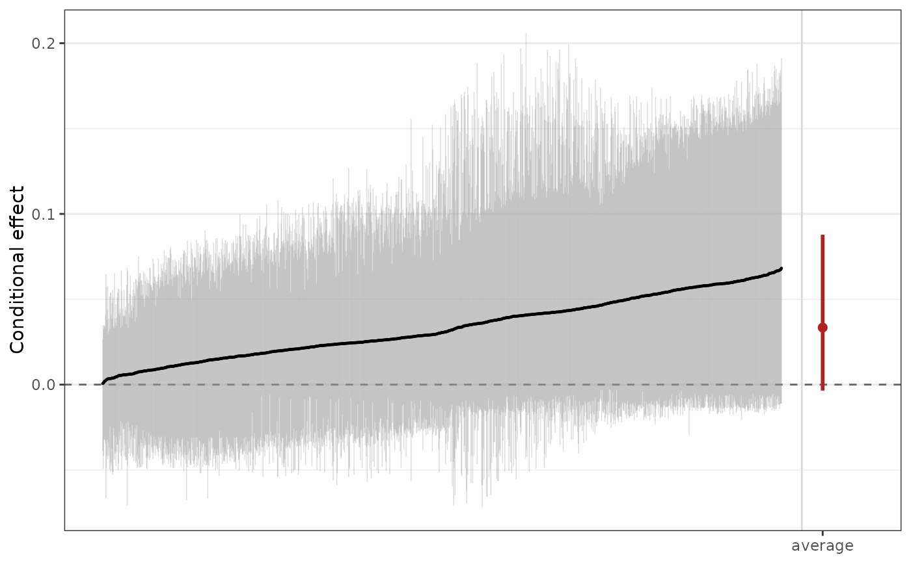

A fit from bcf() is a <bartisan_fit> with a treatment named, so it takes
every method that fit takes. print() adds the treatment and says where the
effect comes from, and plot() draws the conditional effects.
Arguments
- x
a
<bcf_fit>object; the output of a call tobcf().- digits
integer; the number of significant digits to print.- ...
for
plot(), further arguments passed toestimate_effect(); otherwise ignored.- level
numeric; the level of the credible interval. Default is.95.- comparison
passed to
estimate_effect(), which is what computes the numbers.- marginal
logical; whether to draw the marginal effect beside the conditional ones. Default isTRUE.
Details
The effect itself is estimate_effect()'s to report, and summary() on a
<bcf_fit> is the same summary of the forests it is on any other fit, with a
line at the end saying so. That way the same call prints the same thing
whether the model came from bcf() or from bartisan() with a vc() term.
See also
estimate_effect() for the effect and its estimands; bcf() for the
model
Examples
data("rhc")
set.seed(123)
fit <- bcf(death ~ age + sex + meanbp + aps, treat = ~ rhc,
data = rhc, num_trees = 10, num_burn = 50, num_draws = 50,
verbose = FALSE)
#> ℹ Using `family = binomial()`.
#> ℹ Set `family` explicitly to silence this message.
fit
#> Generalized BART
#>
#> Call:
#> bcf(formula = death ~ age + sex + meanbp + aps, treat = ~rhc,
#> data = rhc, num_trees = 10, num_burn = 50, num_draws = 50,
#> verbose = FALSE)
#>
#> Family: "binomial" with the "logit" link
#> Observations: 1500
#> Structure: 2 forests of 10 trees, soft decision rules
#> Draws: 50 kept after 50 warmup
#>
#> Posterior means: b.rhc.0 = 0.161, b.rhc.1 = 6.89e-05
#>
#> Treatment: "rhc"
#> Effect moderators: "age", "sex", "meanbp", and "aps"
#> ℹ `estimate_effect()` reports the treatment effect, with the average potential
#> outcomes beside it; `plot()` draws the conditional ones.
# The effect, with the potential outcomes it is a difference of
estimate_effect(fit)
#> Average treatment effect (difference)
#>
#> Treatment: `rhc`
#> Averaged over 1500 units
#>
#> contrast estimate lower upper n
#> Y[1] - Y[0] 0.0334 -0.00348 0.0878 1500
#>
#> Average potential outcomes
#>
#> quantity estimate lower upper
#> Y[0] 0.642 0.610 0.665
#> Y[1] 0.675 0.638 0.704
#>
#> ℹ estimate is the posterior mean; lower and upper bound the 95% equal-tailed
#> credible interval.
#> ℹ Y[a] is the average response with `rhc` set to "a".
# The conditional effects, ordered, with the marginal effect beside them
plot(fit)
